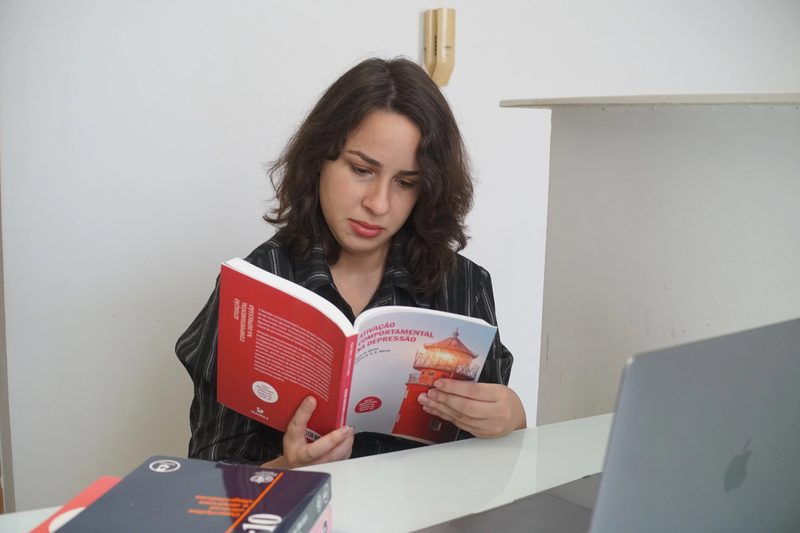

Você já tentou parar de apostar e não conseguiu?
Isso não é falta de força de vontade — é um padrão que tem uma função. Entender essa função é o primeiro passo para mudar de verdade.
Falar em sigilo
Isso soa familiar?
- Você já apostou tentando recuperar o que perdeu, mesmo sabendo que provavelmente pioraria?
- Já escondeu de alguém de confiança quanto tempo ou dinheiro você gasta apostando?
- Sente alívio na hora da aposta e culpa logo depois — e mesmo assim volta?
- Já tentou parar sozinho e, em algum momento, voltou?
Reconhecer-se em uma ou mais dessas perguntas não é um diagnóstico. É um convite para conversar com um profissional e entender o que está por trás.
A aposta não é o problema — é a tentativa de resolver outro problema
Ansiedade, vazio, tédio, uma dor que não tem outro lugar para ir — a aposta costuma aparecer como alívio rápido para alguma coisa que pede outra saída. Entender o que é essa "outra coisa" é o que muda o padrão de forma sustentável, muito além de bloquear aplicativos ou fazer força de vontade.
Como funciona o acompanhamento
- Atendimento individual, 100% online
- Abordagem baseada em Terapia de Aceitação e Compromisso (ACT) e DBT — foco na função do comportamento e na regulação emocional, não em culpa ou repreensão
- Sigilo total — nada do que é dito na sessão sai dali
- Sem julgamento, sem discurso moralizante, sem prescrição de "regras" que você já tentou sozinho

Perguntas frequentes
Isso substitui tratamento médico/psiquiátrico, se eu precisar?
Não. Se houver indicação de acompanhamento psiquiátrico, isso é conversado e encaminhado junto — psicoterapia e acompanhamento médico funcionam bem em conjunto quando necessário.
Vou ser obrigado a excluir minhas contas de aposta ou parar de imediato?
Não há imposição de regras prontas. O trabalho é entender o padrão com você, no seu ritmo, para que a mudança seja sua — não uma exigência externa.
É só para casos graves?
Não. Quanto mais cedo o padrão é entendido, mais simples costuma ser lidar com ele.
O atendimento é sigiloso mesmo?
Sim — sigilo profissional é uma exigência ética da profissão (CRP 03/21534).

Letícia FreitasPsicóloga · CRP 03/21534Dar o primeiro passo não precisa ser dramático
Uma conversa inicial, sem compromisso, para você entender como funciona.
Falar em sigilo